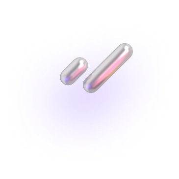
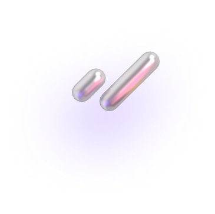
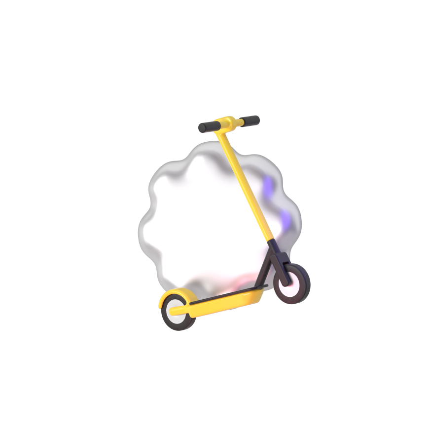
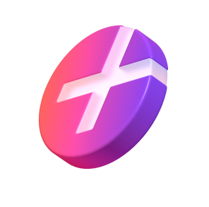
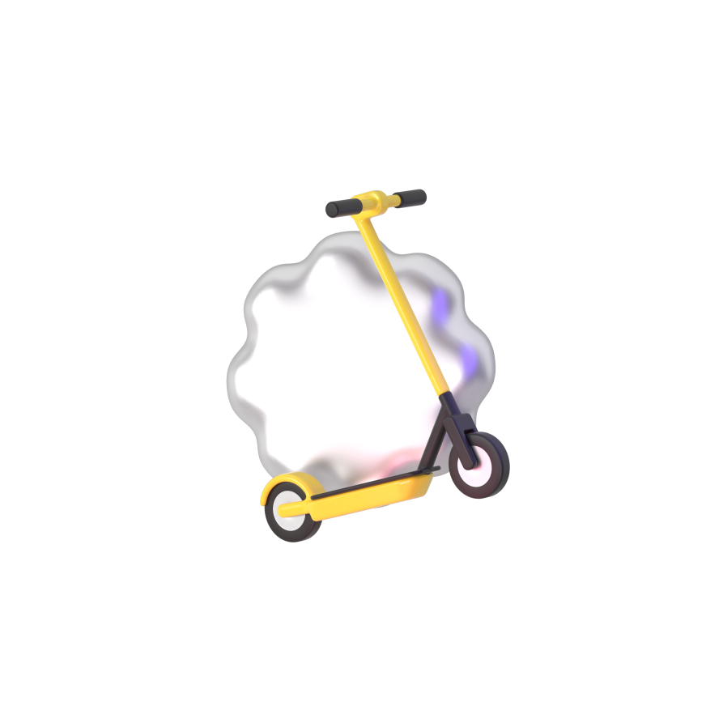
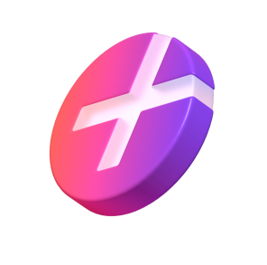
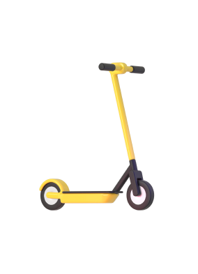
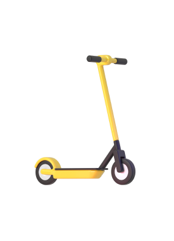

0 ₽ за старт в каждой поездке

Купите абонемент, чтобы стать частью клуба в новом сезоне–2024. 8 месяцев за 499₽ 3190₽


 Стать частью клуба
Стать частью клуба
0 ₽ за старт в каждой поездке

Катаетесь с друзьями? Бронируйте до трёх самокатов с аккаунта с абонементом — так у всех будет бесплатный старт

Бесплатная пауза 15 минут в поездке — например, чтобы зайти за кофе или передохнуть

Если самокат недостаточно заряжен или с ним неудобно переходить дорогу, замените по пути на другой — это бесплатно
С абонементом — у вас доступ к специальным мероприятиям, скидки и классный мерч. В 2023 году мы танцевали на Даче Плюс с Антохой MC, катались на самокатах с Сергеем Мезенцевым и слушали хор Attaque de Panique


 



За каждую поездку на самокатах такие пользователи получают кешбэк баллами. Баллы можно тратить на поездки на самокатах и такси с Яндекс Go, покупки и заказы в других сервисах Яндекса
 



 


Присоединяйтесь — опция начнёт действовать в начале сезона–2024. Об открытии сезона предупредим заранее, чтобы вы были готовы
Хочу абонемент